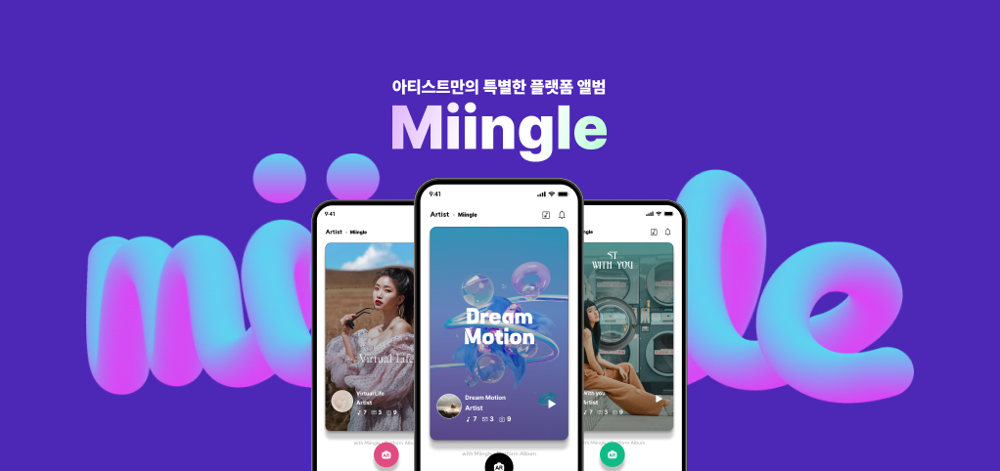
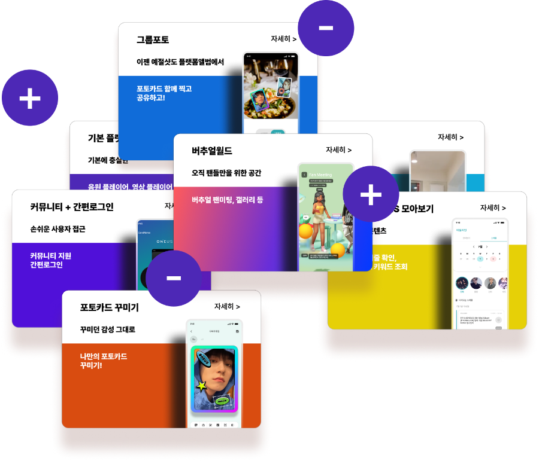

About
OMOTION 2023 (프로덕트 디자인,프로모션 홈페이지 제작,with figma,after effect)디자인 참여도 70% 서비스기획 50%, 팀구성 디자이너(본인), 신입 디자이너1인, 사업기확자 1인, 앱 개발자 2인입사 후 기존 프로덕트가 있었고, 1차 버전은 샘플용으로 유지, 1차 베이직 프로덕트를 토대로 2차버전을 서비스 기획 -> 3차버전부터 신규 영입된 사업기획자와 진행,
후에 1차 샘플 버전이 출시형으로 확정되어져 해당건으로 진행을 하고 프로덕트 서비스 프로모션 홈페이지와 홍보영상을 제작
Research
유사 서비스 벤치마킹, 화면 비교 -> 장단점 파악 -> 본사 서비스핏 매치
사전 추가될 기능에 대한 유저인터뷰
추가 서비스 기능에 대한 커뮤니티 타겟 분석
Prototyping
figma prototyping 제작 A,B 시안 사내 검증
user flow
wireframes
Design Process
자사와 연계되어 있는 대학 동아리 학생들을 대상으로 기존 프로토타입에 대한 Q/A와 인터뷰타임을 통해 현재 제작하고자 하는 서비스의 방향성과 제가 입사하기 전 거론되었던 기능들에 대한 선호도 인터뷰를 함께 참여했습니다. 입사 당시 프로토타입과 베이직 버전이 구현되어 있었고, 그것을 토대로 2차 버전의 서비스 기획을 진행했습니다. 데드라인이 1개월 정도 잡혀 있었고, 우선적으로 기본 구조내에서 개선점들과 추가 기능들을 혼합하는 작업을 실시 했습니다. 후에 추가요청적인 기능에 대해서는 해당 기능에 대한 사전 리서치와 유사 서비스들을 팀원과 의견을 주고 받고 -> 와이어프레임 -> 자체 사전검증(프로토타입) 후 프로덕트 디자인에 추가하는 방식으로 진행 되었습니다.
Service Target
앨범 주 구매층 10-20대
국내외 해외 서비스
IOS/AOS -> 향후 tablet pc
-
Step 1
기존에 제작되어 있던 샘플 버전을 개발 공수 최소 버전으로 리터치
-
Step 2
2차 버전으로 스케줄과 커뮤니티기능을 추가한 플랫폼 앨범
-
Step 3
3차 버전으로 탑꾸와 그룹사진 기능이 추가된 버전
-
Step 4
최종 목표인 플랫폼 앨범 기반의 메타월드 버전
Goals
정부R&D 사업과 맞물려 있는 구조로 사전에 사업계획서에 있는 플롯을 그대로 가지고 가야하는 사전 정의가 있었습니다. 하나의 단일 서비스에 너무 많은 기능이 들어가 있는 구조였으며, 이것을 향후에 메타월드라는 생소한 서비스로 연결되었을때 어떤 흐름으로 진행을 해야 사용자가 이질감을 안느낄지에 대해 가장 많이 고민했습니다. 3가지의 타입을 한번에 구성하기란 내부적으로 프로덕트 협업을 할 수 있는 인원이 본인을 포함한 2인밖에 없는 상황이였고, 처음에는 독특한 형태의 진행에 대해 고민을 하다가 최종버전을 먼저 만들고 그 형태에서 덜어내는 접근방식으로 가는것이 여러버전들간의 이질감을
가장 최소화할수 있다 판단되었습니다. 다만 최종버전을 디테일하게 진행하기에는 일정이 부족했고, 최종버전을 기준으로 큰 서비스 맥락적인 구조로 접근 했습니다.